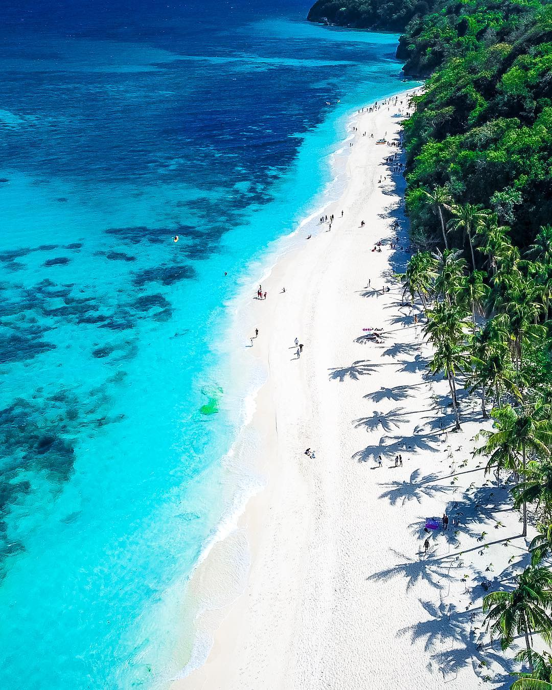

Western Visayas, also known as Region 6, is a region located in the western part of the Visayas island group in the Philippines. It is composed of six provinces: Aklan, Antique, Capiz, Guimaras, Iloilo, and Negros Occidental. Western Visayas is known for its beautiful beaches, historical sites, vibrant festivals, and delectable cuisine.
Aklan is famous for being the home of Boracay Island, one of the world's top beach destinations. Boracay is renowned for its white sandy beaches, crystal-clear waters, and vibrant nightlife. Apart from Boracay, Aklan also offers attractions such as the Ati-Atihan Festival, an annual celebration known for its lively street dances and colorful costumes.
Antique is a province known for its unspoiled natural attractions and cultural heritage. It features stunning waterfalls, pristine beaches, and lush mountains. Antique is also home to the unique Kawa Hot Bath, where visitors can soak in large metal vats filled with hot water and infused with herbs.
Capiz is known for its rich marine resources, particularly its abundant supply of seafood. The province is famous for its "Capiz shells," which are often used for making decorative items such as lamps and window panels. Capiz is also home to historical sites such as the Santa Monica Church and the Panay Church.
Guimaras is an island province known for its sweet mangoes, often considered the best in the Philippines. The province offers pristine beaches, idyllic coves, and nature reserves. Guimaras is also known for its unique attractions like the Trappist Monastery and the Guisi Lighthouse.
Iloilo is a province known for its rich cultural heritage, delicious cuisine, and vibrant festivals. It is dubbed the "City of Love" and is famous for its old-world charm and heritage houses. Iloilo City's Jaro Cathedral, Miag-ao Church, and the annual Dinagyang Festival, a colorful celebration of dance and music, are major attractions.
Negros Occidental is known for its sugarcane plantations and haciendas, earning it the title "Sugar Bowl of the Philippines." The province offers historical sites like The Ruins, a well-preserved mansion, and beautiful beaches such as Sipalay and Lakawon Island. Negros Occidental is also famous for the MassKara Festival, a joyous event featuring masked street dancers.
Western Visayas offers a combination of natural beauty, cultural heritage, and warm hospitality. Its pristine beaches, vibrant festivals, historical landmarks, and mouthwatering cuisine make it an enticing destination for travelers. Whether you seek relaxation on the beach, cultural immersion, or culinary delights, Western Visayas welcomes you with open arms.